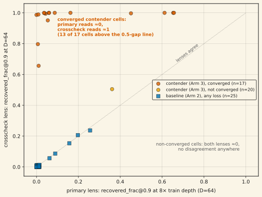
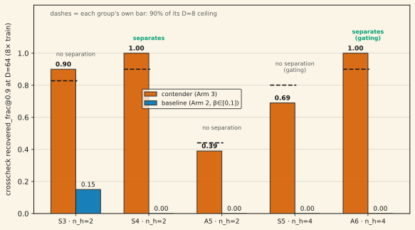

A 62-cell sweep testing whether a recurrent composer generalizes exact composition to 8× its training depth completed cleanly, and the pre-registered mechanical endpoint read FALSIFY. Then the instrument-health pass found something worse than a failed hypothesis: the primary readout and its pre-registered crosscheck contradicted each other at 0-vs-1.0 magnitude on exactly the cells that had converged perfectly (training loss ≈ 10⁻⁴), while agreeing — both ≈ 0 — on every cell that hadn't. The tiebreak localized the defect: the primary lens assumes the model's state basis sits in the identity gauge, an assumption validated on a different architecture and silently false on this one — a perfect model in a rotated basis reads exactly 0 under it, by construction. The corrected read was not taken on faith: a shuffled-target falsifier, pinned before any number was trusted, would have voided the tiebreak had the crosscheck read ≥ 0.5 on permuted targets; it read 0.00 / 0.00 / 0.05. Under the corrected lens the endpoint is still FALSIFY under the as-built pins — for more informative reasons — and moves to INCONCLUSIVE after two pre-registered pin ambiguities discharge. No capability win is claimed; the dissociation and the audit trail are the finding. Unpublished.
01The experiment underneath
The composer is a delta-rule fast-weight model whose state update is a product of n_h Householder-like factors per step (DeltaProduct-style). Five task groups (S3, S4, S5 — symmetric groups; A5, A6 — alternating groups) each define an exact-composition task: train on operator sequences of depth ≤ 8, evaluate recovery of the composed operator at depths 16 / 32 / 64 — up to 8× the training support. The pre-registered contrast: a contender arm with extended step size β ∈ [0, 2] (which makes genuine reflections reachable) against an otherwise-identical baseline restricted to β ∈ [0, 1]. The endpoint asks whether the contender measurably separates from the baseline at the far checkpoint on the two gating groups, S5 and A6.
Recovery is scored by two pre-registered readouts. The primary lens reconstructs the composed operator from the state through a scale-only "degauge" pipeline — it assumes the model's internal basis matches the task basis up to scale. The crosscheck lens makes no such assumption: it fits an orthogonal intertwiner (full-Q Procrustes) on a fit split of items and scores recovery on an index-disjoint eval split. The crosscheck was in the registration from the start, because an earlier stage of this program had already caught the primary's class of failure once.
02The contradiction

The pattern's alignment with convergence is the tell. The lenses agree on all 25 baseline cells (which fit training poorly everywhere, loss 0.11–0.35) and on every non-converged contender cell. They disagree only where the model actually solved training — the S4 family is the cleanest case: five out of five seeds at loss < 5×10⁻⁴, primary reads 0.05–0.15 at far depth, crosscheck reads 1.00. Both readings cannot be right about the same states. Either the primary is blind to converged solutions, or the crosscheck is trivially satisfiable and reads high on anything.
03The tiebreak — and the falsifier it had to survive
The tiebreak was adjudicated from raw artifacts and code, on four independent grounds: (1) the crosscheck is leakage-guarded by construction — the intertwiner is fit on the fit split only and scored on a disjoint eval split, so "trivial satisfiability" would require it to overfit data it never saw; (2) the crosscheck demonstrably discriminates — it reads ≈ 0 on every non-converged cell in the grid (fig 1's blue squares); (3) the primary's failure mode was already documented in this program's own records: its scale-only degauging is basis-brittle, and the empirical basis for trusting the identity-gauge assumption ("Q̂ ≈ I on every real checkpoint") had been measured on the previous architecture's states. The composer is a different architecture with no entitlement to that gauge — a perfect model in a rotated basis reads 0 under Q̂ = I by construction; (4) a synthetic-injection precedent where ground truth was known resolved the same class of contradiction to the crosscheck.
An argument, however layered, is not evidence — so the tiebreak pinned its own falsifier before the corrected read was trusted: re-run the crosscheck on converged checkpoints with the targets shuffled (correspondence between states and targets broken, same shapes and marginals). If the crosscheck read ≥ 0.5 on shuffled targets, the tiebreak was pre-declared wrong and the whole contradiction would escalate to an instrument rebuild.
| converged control cell | real targets | shuffled targets | falsifier (≥ 0.5) fires? |
|---|---|---|---|
| A6 · n_h=4 · seed 0 | 1.000 | 0.000 | no |
| S5 · n_h=4 · seed 0 | 0.800 | 0.000 | no |
| S4 · n_h=2 · seed 2 | 1.000 | 0.050 | no |
The "real" column also reproduced the committed sweep values bit-for-bit, confirming the recompute harness runs the production pipeline rather than a reimplementation of it. The re-metric itself needed one genuinely new number per cell (the crosscheck reading at the training-depth ceiling, which the sweep had computed but not persisted); the recompute was validated by reproducing all 62 cells' committed primary readings to < 10⁻⁹ before any new number was used.
04What the corrected lens changes — and what it does not
Honesty cuts both ways: re-reading the full grid under the crosscheck lens does not flip the verdict. The mechanical endpoint under the as-built pins is still FALSIFY — but the reason changes from "no detectable signal anywhere" (the broken lens's face-value reading) to two specific, disclosed confounds: A6's decisive configuration (n_h = 2) never converges under either lens — a lens-independent trainability fact, and itself a previously-untested n_h-sufficiency measurement (identically-budgeted n_h = 4 cells converge 3/3 on the same task) — and S5's decisive triad is dragged below its bar by one pre-classified trainability-outlier seed that reads zero under both lenses despite converged training loss, while its other seeds clear 65–80% of their own ceiling against a baseline pinned at exactly 0.0.
Two pin ambiguities then discharge along routes quoted from the pre-registration itself, not invented post hoc: A6's decisive n_h was registered as "calibration-pending," and its own flanking grid answers it (n_h = 4: 3/3 converged, far-depth crosscheck 1.00/1.00/1.00, zero seed variance); S5's ambiguous triad (CI straddling its bar) triggers the pre-registered seed extension to n = 5 — and both new seeds land the best S5 training losses in the grid, read crosscheck 1.00 at every depth, and read ≈ 0 under the primary lens: the dissociation reproduced a third and fourth time, out-of-sample. The pooled S5 quintet still fails its own far bar (0.690 vs 0.801) because the outlier seed stays in the aggregation — the pre-registered remedy is more seeds, never exclusion.

The endpoint of record. Under the as-built pins: FALSIFY (both lenses, recorded). Under the discharged pins: INCONCLUSIVE — separation present at one gating group (A6) and absent at the other (S5), which the pre-registration routes to diagnosis, not to a verdict. Whether the discharged-pin reading supersedes the as-built one as the stage verdict is an explicitly-pending promotion call. What is not claimed anywhere: a compositional-depth capability win.
Update (July 10). The pre-registered diagnosis round has since run and the promotion call has been made: the ratified verdict of record is INCONCLUSIVE-TRAINABILITY-LIMITED — every miss in the endpoint is mechanism-diagnosed as a trainability event (a rank-deficient basin at S5, a depth-graded architecture ceiling at A6 n_h ≤ 2, a convergence lottery at A5), and every converged configuration composes exactly at 8× its training depth. The full diagnosis, with the trainability qualifier attached to every number, is finding no. 13, "Composes exactly at 8× training depth, where it converges". Nothing on this page is retracted; the as-built FALSIFY stands as this record's verdict.
05Caveats — read before citing
- This is a methodology finding, not a capability result. The citable claims are: (a) the primary/crosscheck dissociation on converged cells — 13 of the grid's 17 converged contender cells show a ≥ 0.5 far-depth gap, plus 2 out-of-sample extension seeds; (b) the shuffled-target control passing 3/3; (c) the endpoint status exactly as stated in section 04. Anyone quoting a "depth-generalization win" from this page is misquoting it.
- The A6 n_h = 2 non-convergence and S5 seed-1 outlier are model facts, not instrument artifacts — both lenses agree on them. "Trainability variance" labels, not explains, them; the same bimodal pattern appears in a sibling campaign's multi-hop task.
- The primary lens is not yet repaired. The identity-gauge defect on converged composer cells is an open instrument-repair item; until fixed, no future wave in this program may read the primary lens as a headline number on this architecture.
- This defect class is now a three-time repeat offender in this codebase. A [K,V]-vs-[V,K] state-layout transpose bug has independently surfaced, been diagnosed, and been fixed in three separately-implemented functions across two unrelated programs — this one, and a third documented in finding no. 15, where a pre-registered positive control caught it, the fix reopened a closed lane, and two correspondence nulls closed it again on firmer ground. Any new readout in this codebase that extracts kernel state should be checked against this pattern before it ships a headline number.
- The seed-extension variance gate fired (zero variance in the new cohort vs 0.18 in the old, a degenerate ratio) — disclosed, both pooled and unpooled reads reported; the pooling decision is verdict-irrelevant here since S5 fails its bar under either.
- Scale and scope. Small task-specific models on five finite groups; depth tested to 8× training support; conclusions are about this composer and these readouts.
06Reproducibility
Everything is recomputable from committed raws: experiment-runs/2026-07-10_stage2_calibration/sweep_results/ (all 62 cell JSONs + the harvest report), …/remetric_2p32/ (the ceiling-recompute and teeth-control script + outputs, the shadow-cell verdict harness that calls the production verdict function unmodified, and the 62-cell flat table behind fig 1), and …/route_2p33/ (the two S5 extension-cell JSONs, the routing harness, and the four-verdict output behind fig 2). The re-metric and routing stages were CPU-only re-reads plus two 8,000-step training cells (≈ 0.05 GPU-h); the sweep itself was ≈ 2.6 GPU-h. Figure script: assets/plots/generate_broken_lens.py, which reads the archived verdict JSONs directly.
References
- Siems, J., et al. (2025). DeltaProduct: Improving State-Tracking in Linear RNNs via Householder Products. arXiv:2502.10297
- Grazzi, R., et al. (2025). Unlocking State-Tracking in Linear RNNs Through Negative Eigenvalues. ICLR 2025, arXiv:2411.12537